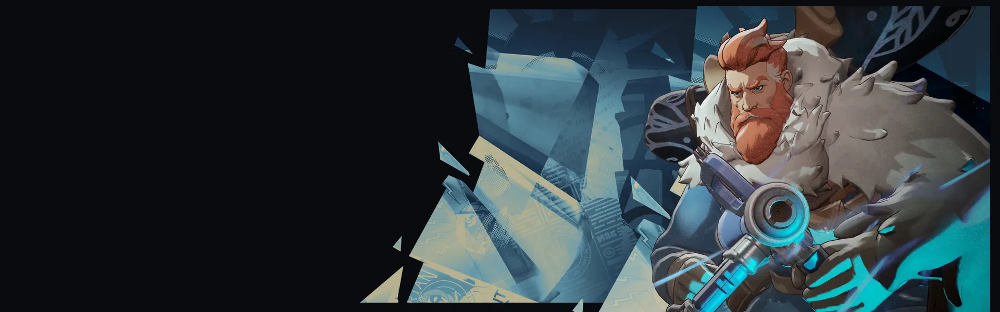
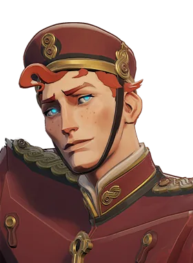

Granada de Gelo Frost Grenade Lança uma granada que explode em gelo, curando aliados e causando dano espiritual e lentidão a inimigos. Caminho de Gelo Ice Path Cria uma trilha de gelo flutuante que dá velocidade a Kelvin e aliados, e resistência a lentidão a Kelvin. Feixe Ártico Arctic Beam Dispara um raio congelante que fere e reduz progressivamente a velocidade de movimento e a cadência de tiro quanto mais tempo fica no alvo. Abrigo Congelado Frozen Shelter Cria uma cúpula de gelo impenetrável em torno de Kelvin ou de um herói alvo, curando aliados dentro e retardando inimigos.Proteção e cura, bom em manter aliados vivos.
História
Um famoso cientista aventureiro, Kelvin assumiu como missão de sua vida explorar e compreender o incognoscível. Então, naturalmente, quando surgiram rumores sobre um 8º portão astral escondido no Ártico, Kelvin não conseguiu formar uma equipe de expedição rápido o suficiente. Reunindo as mentes mais brilhantes de sua geração, Kelvin e sua equipe partiram com muito alarde.
Eles nunca voltaram.
Um ano e meio depois, o corpo congelado de Kelvin foi encontrado por uma traineira de pesca, com seu cadáver agarrado a uma rocha gravada com runas brilhantes. A tripulação cortou o gelo, tentando ver o corpo mais de perto e ficou chocada quando Kelvin abriu os olhos. Eles verificaram seus sinais vitais... não havia pulso. Eles tentaram enfaixar suas feridas abertas... não havia sangue. E ainda assim, impossivelmente, Kelvin estava “vivo”.
Sem se lembrar do que aconteceu na expedição, Kelvin procura respostas.
História oficial do jogo, traduzida automaticamente para o português.
Números reais
Habilidades
Lança uma granada que explode em gelo, curando aliados e causando dano espiritual e lentidão a inimigos.
Cria uma trilha de gelo flutuante que dá velocidade a Kelvin e aliados, e resistência a lentidão a Kelvin.
Dispara um raio congelante que fere e reduz progressivamente a velocidade de movimento e a cadência de tiro quanto mais tempo fica no alvo.
Cria uma cúpula de gelo impenetrável em torno de Kelvin ou de um herói alvo, curando aliados dentro e retardando inimigos.
Builds mais usadas
7.248 partidas registradas com esta build.
Rodadas de alta velocidade (800) · Rodadas de Abertura (1.600) · Regeneração Extra (800) · Regeneração Mística (800) · Taxa Extra (800) · Espírito Extra (800) · Vigor Extra (800) · Surto Arcano (1.600) · Espírito Melhorado (1.600) · Colecionador de Troféus (1.600)
7.188 partidas registradas com esta build.
Taxa Extra (800) · Espírito Extra (800) · Regeneração Extra (800) · Expansão Mística (800) · Botas de corrida (800) · Surto Arcano (1.600) · Healbane (1.600) · Pulso de Tormento (3.200) · Colecionador de Troféus (1.600) · Rito de Cura (800)
4.863 partidas registradas com esta build.
Taxa Extra (800) · Espírito Extra (800) · Botas de corrida (800) · Espírito Melhorado (1.600) · Pulso de Tormento (3.200) · Healbane (1.600) · Velocidade duradoura (1.600) · Expansão Mística (800) · Recarga rápida (3.200) · Roubo de Vida Espiritual (1.600)
Confrontos reais
 Deadman Danny — 60.4% de vitória
Deadman Danny — 60.4% de vitória Pocket — 59.8% de vitória
Pocket — 59.8% de vitória Shiv — 59.6% de vitória
Shiv — 59.6% de vitória Mirage — 59.0% de vitória
Mirage — 59.0% de vitória
The Doorman — 58.9% de vitória Mina — 58.6% de vitória
Mina — 58.6% de vitória
 Rat King — 47.2% de vitória
Rat King — 47.2% de vitória Graves — 47.8% de vitória
Graves — 47.8% de vitória Paige — 48.1% de vitória
Paige — 48.1% de vitória Seven — 48.2% de vitória
Seven — 48.2% de vitória Haze — 49.1% de vitória
Haze — 49.1% de vitória Victor — 50.5% de vitória
Victor — 50.5% de vitória
Ver a página de counters do Kelvin
O que upar primeiro
Nível por nível, na ordem que os jogadores mais usam em partidas de verdade. A porcentagem mostra quantos escolheram aquela habilidade naquele nível.
Melhores duplas
Heróis que mais ganham jogando junto com ele, em partidas reais (pelo menos 1.500 partidas juntos).
- Rat King62,1%
- Graves61,5%
- Paige60,3%
 Baba58,9%
Baba58,9%- Seven58,4%
- Shiv48,6%
 Solomon49,5%
Solomon49,5%- Pocket49,7%
Histórico de win rate
14/09: 49.3% → 02/11: 50.5% → 21/12: 46.9% → 08/02: 46.9% → 29/03: 54.3% → 17/05: 53.7% → 05/07: 53.2% → 23/08: 54.2% → 11/10: 54.5%